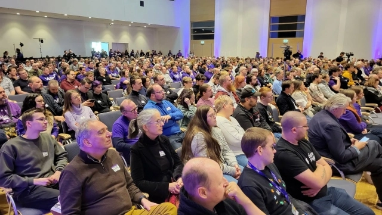

Motion des membres
Une déclaration politique pour clôturer l'Assemblée générale de Bratislava

Pourquoi une déclaration politique ?
Love Parade. COP. Sommets politiques : pour être pertinents, les événements véhiculent généralement un message ou une déclaration.
Les Assemblées générales européennes sont nos principaux événements. Nous venons des quatre coins de l'Europe. Mais nous repartons chaque fois sans avoir formulé une message ou une déclaration politique.
Nous ne pouvons pas exiger une Europe politique si nos propres événements européens ne sont pas politiques.
Changeons cela.
En proposant une déclaration politique pour clôturer notre AG à Bratislava. Ambitieux. Audacieux. Pour donner un nouvel espoir d'unir l'Europe.
Je demanderai aux chapîtres de peaufiner et, je l'espère, d'approuver la déclaration suivante, car je crois que nous pouvons développer notre influence en tant que Volt Europa en montrant aussi que nous pouvons parler d'une seule voix.
En tant que membres, c'est à nous d'avoir le dernier mot sur cette déclaration en la débattant et en l'approuvant (ou pas).
La déclaration de Bratislava
Volt mettra en place la plateforme pour un leadership européen et appelle les États membres à engager des modifications des traités.
Les derniers mois nous ont montré que, dans un monde qui se détériore, nous, citoyens européens, ne pouvons l’emporter que si nous changeons l’Europe pour le mieux.
Qu’il s’agisse d’une armée européenne ou d’une Europe unie, les citoyens de tout le continent comprennent l’urgence et l’enjeu. Volt aussi : nous manquons de temps.
Volt Europa a été créé dans le but de « fixer l’Europe ». Nous croyons en une Europe fédérale et nous appelons les gouvernements nationaux à faire eux aussi un acte de foi : modifier les traités n’a jamais été facile, mais c’était possible jusqu’au traité de Lisbonne de 2007. Nous constatons aujourd’hui que 20 ans sans réforme mènent au désastre.
Il suffit d’un seul gouvernement pour proposer des modifications des traités au Conseil européen. Quatorze peuvent lancer le processus. Nous n’avons pas 27 Orbán. Nous n’avons pas 14 Orbán. En réalité, nous n’avons plus d’Orbán. Alors, qu’est-ce qui nous en empêche ?
Si les dirigeants nationaux continuent de se contenter de parler d’une Europe plus unie et plus intégrée sans franchir les étapes logiques suivantes, la seule solution est de construire et de voter pour un véritable leadership politique européen. C’est ce que fera Volt.
Les prochaines élections européennes auront lieu en 2029. Volt exige que les traités de l’UE soient rouverts d’ici là. Nous ne pouvons pas attendre. Et Volt n’attendra pas :
Nous chercherons à dialoguer avec les chefs d'État pour plaider en faveur de modifications des traités visant à donner au Parlement le droit d'initiative et à passer au vote à la majorité qualifiée.Nous créerons une dynamique au sein de la population afin de profiter des prochaines élections européennes pour changer de cap vers une Europe fédérale.Nous construirons la plateforme pour les futurs dirigeants européens – aux niveaux européen et national – afin d'offrir une alternative et une perspective européenne aux électeurs.
Volt Europa sera prête à assumer ses responsabilités dans trois ans.
Nous exigeons que les gouvernements nationaux assument leurs responsabilités dès maintenant.
Motion
Je propose que la motion suivante soit débattue et votée lors de la prochaine Assemblée générale de Volt Europa à Bratislava :
Approuvez-vous la conclusion de l'Assemblée générale de Volt Europa à Bratislava par la déclaration politique proposée ?
Soutenir la motion
Pour qu'une motion soit déposée, elle doit être soutenue par 1 % des membres effectifs. Si vous êtes membre de Volt et souhaitez soutenir l'ajout de ce sujet à l'ordre du jour de l'Assemblée générale de Bratislava, veuillez remplir le formulaire ce formulaire de soutien (adresse e-mail @volteuropa exigée – si vous n'en avez pas, veuillez m'envoyer un message).
Merci de contribuer à ce que notre mouvement reste fidèle à ses racines participatives.